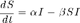
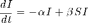
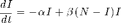

SIS Model for an Infectious Disease
The SIS model is a simple epidemilogical modeling for the transmission of an infectious disease without significant morbidity, such as the common cold or influenza, for which victims do not exhibit long-term immunity.
Contents
SIS compartment model
An isolated and fixed population of  individuals is divided into two components. The first is a population of individuals infected with a contagious disease, and the other comprises the individuals who are susceptible to the disease.
individuals is divided into two components. The first is a population of individuals infected with a contagious disease, and the other comprises the individuals who are susceptible to the disease.
_______________ alpha*I _______________
| |<---------| |
| Susceptible | | Infected |
|_______________|--------->|_______________|
beta*S*IIn any given period (we'll use a week as our basic unit of time), we assume a fraction of the infected individuals will recover and return to the susceptible state. So the number of infected indivduals returning to the susceptible state is .
During that same period, each infected individual will encounter other individuals. The probability that an individual is susceptible is S/N, and the probability of infecting a susceptible individual will be denoted by  . Thus the average number of susceptible individuals becoming infected during the time period is
. Thus the average number of susceptible individuals becoming infected during the time period is  .
.
Writing this as a pair of differential equations for and , we find


This can be simplified because . Solving for and substituting into the second equaton gives

This is a single equation to be solved for .
Paramter Values
N = 20000; % Population size alpha = 1; % Fraction of infected individuals recovering in one period beta = 5/N; % Fraction of susceptible people infected by one person
Anonymous function for the Differential Equation
dI = @(t,I) - alpha*I + beta*I*(N-I);
Solving the Differential Equation
I_initial = 100; % Number of infected individuals at t_initial t_initial = 0; % Initial time t_final = 15; % Final time [t,I] = ode45(dIdt,[t_initial t_final],I_initial);
Plotting the Result
plot(t,I,t,N-I); grid; xlabel('Time [weeks]'); ylabel('Infected Population'); legend('Infected','Susceptable');

Exercises
1. Repeat the simulation with different values for the initially infected population. What happens if  ? If
? If  ? If ?
? If ?
2. Public health efforts can reduce the probability of infection . Use simulation to determine a target value for . Is it possible to reduce the number of infected individuals be reduced to zero?